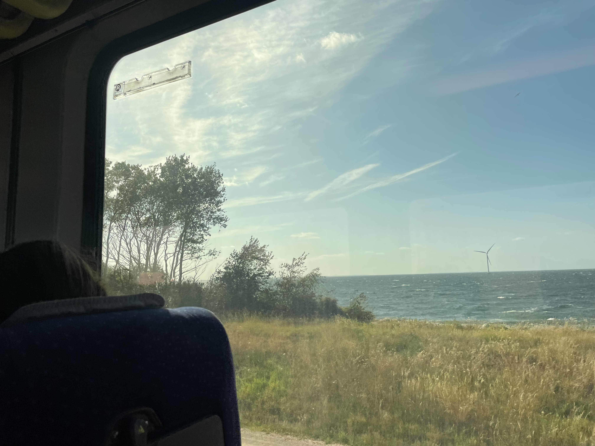

Petite escale d’une nuit à Zurich avant le grand départ.
Craquage à la Viaductstrasse et au Brökli avec Julie - nous voilà assortis avec des chaussures colorées et un peu étranges, prêts pour l’été.
Visite du buro de Valentin, salade d’été et petit plongeon dans sa piscine communautaire.
Pancakes artisanaux un peu ratés. Julie m'a promi une recette contenant uniquement des oeufs et des bananes - ça n'a pas très bien marché. 😅
Panique. tous les achats de Zurich n’entrent pas dans mon sac, et je décolle bientôt - heureusement nous ne sommes pas passés chez cos.
Pause à l’odeur de kérosène sur le rooftop de Zurich aéroport et je m’envole pour Hong Kong 🙈.
Shopping à Zurich
Shopping à Zurich
Mardi 08 Juillet 2025
Petite escale d’une nuit à Zurich avant le grand départ.
Craquage à la Viaductstrasse et au Brökli avec Julie - nous voilà assortis avec des chaussures colorées et un peu étranges, prêts pour l’été.

Le train est rempli de vacanciers; il est 17:00, tout le monde dort déjà. Une dernière fois la mer, un pont, puis des paysages de verdure et de champs défilent jusqu’en Suisse.